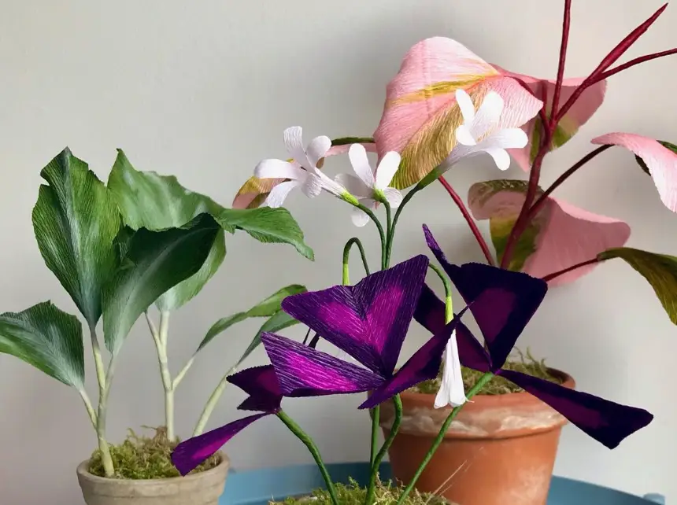

Dette efterår får vi besøg af Louise fra Flor, tre torsdage efter lukketid.
Temaet er crepepapir og bæredygtighed. Hver workshop koster 300kr inclusiv
materialer, en valgfri drik, bagværk og frugt
Spørgsmål og tilmelding via telefon +45 23 62 17 95 eller instagram @flor_aarhus
WORKSHOPS
21 sep 2023
17:30-20:30
For nybegyndere og letøvede. Lær at lave en fin og farverig
gople, der kan pynte derhjemme eller måske være en gave til en barn.
Pris: 300kr
26 okt 2023
17:30-20:30
For nybegyndere og let øvede. Lær at lave en potteplante, der ikke
kræver pasning. Du vælger selv om den skal være naturlig eller fantasifuld.
Pris: 300kr
30 nov 2023
17:30-20:30
For nybegyndere og let øvede. Lær at lave en mistelten, der kan bruges
som julepynt år efter år. Du vælger selv mellem mange farver papir og genbrugsperler.
Pris: 300kr
Tilmeld dig workshop